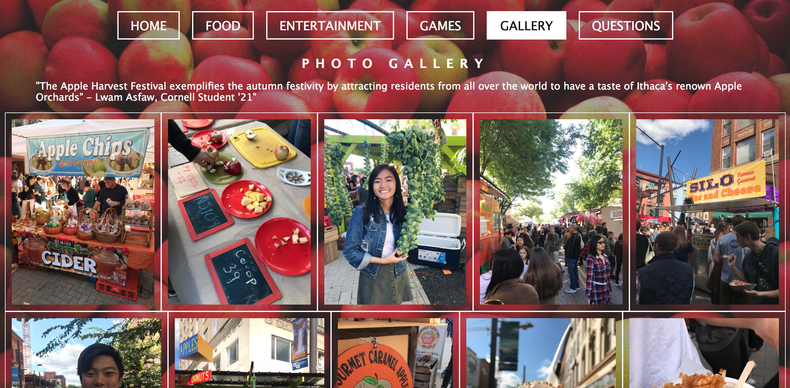
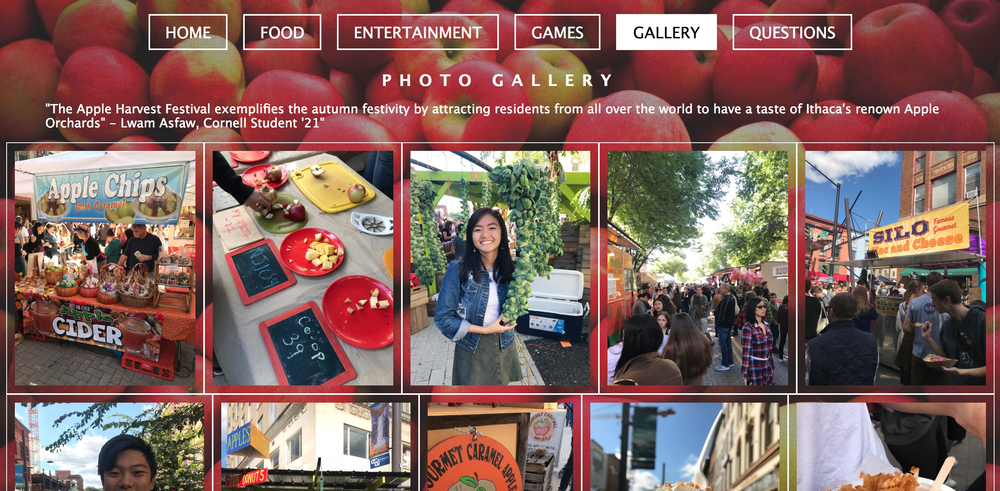

Description:Was a Digital Designer, redesigned the current website.
The current website was not user-friendly because it did not contain any Information about the actual travel magazine, and only provided links to Medium. Additionally, the aesthetic of the website did not match the aesthetic of the actual magazine, which I feel is confusing for the reader of the magazines.
Description:Learned PHP and SQL.
Project 1 & 3: Created a website about Flushing, Queens, my hometown.
Wanted to create a website about Flushing that was geared towards young Asian-Americans, as well as tourists who weren't sure of where to explore and eat in Flushing, since it is a predominantly Asian American community. Added a database with seed data.
Description: Learned HTML, CSS, and Javascript. Learned how to design websites with target audiences.
Project 1: This website was entirely designed by HTML, CSS, and Javascript.
Project 2 & 3: Redesign the Apple Harvest Festival Website. I implemented user-friendly mobile pages.
The Apple Harvest Festival's original website was cluttered and had too much information on it. I re-formatted the website by adding simpler and more obvious functions for the general audience to navigate. The interactivity of the website is to help increase engagement and interest with the website.


 


Project 4: Created a website with a group of 4 people for the Terrace Restaurant at Cornell University.
Contacted the manager of Terrace Restaurant and asked for any specific asserts the manager would like on the website. Website pages are designed to help students understand how to order food at the restaurant. We wanted to increase attention to the workers at the restaurant and acknowledge the hard work that they do for Cornell.


Description: Create posters and whiteboards for the ongoing events that happen at the house.


Description:I was in charge of the publicity materials for Key Club, an international volunteering organization, in high school.